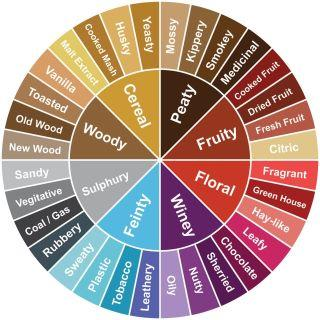

Whisky is a very complex compositions of different flavours. These flavours range from fruity, floral, woody to peaty and winey. The diagram below shows 8 main categories.

The Whisky Advisor makes a suggestion that best fits your favorites flavours.